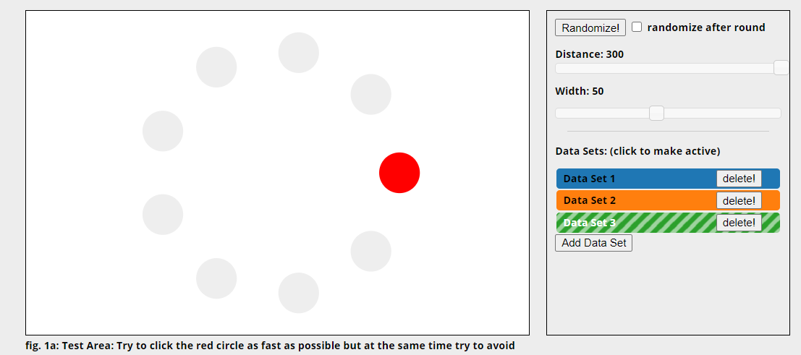
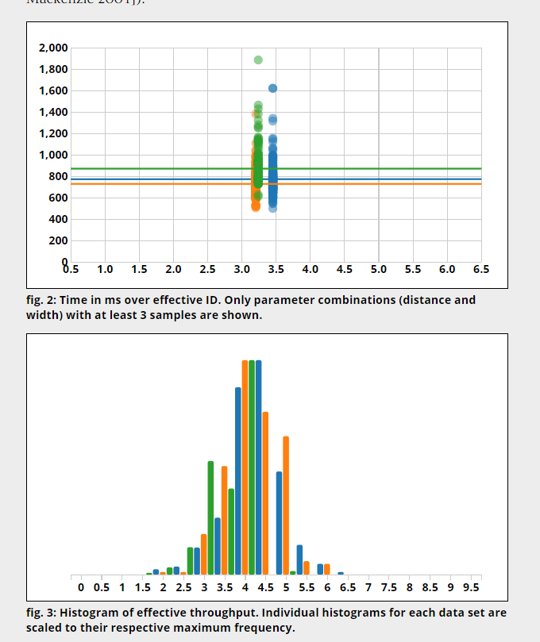
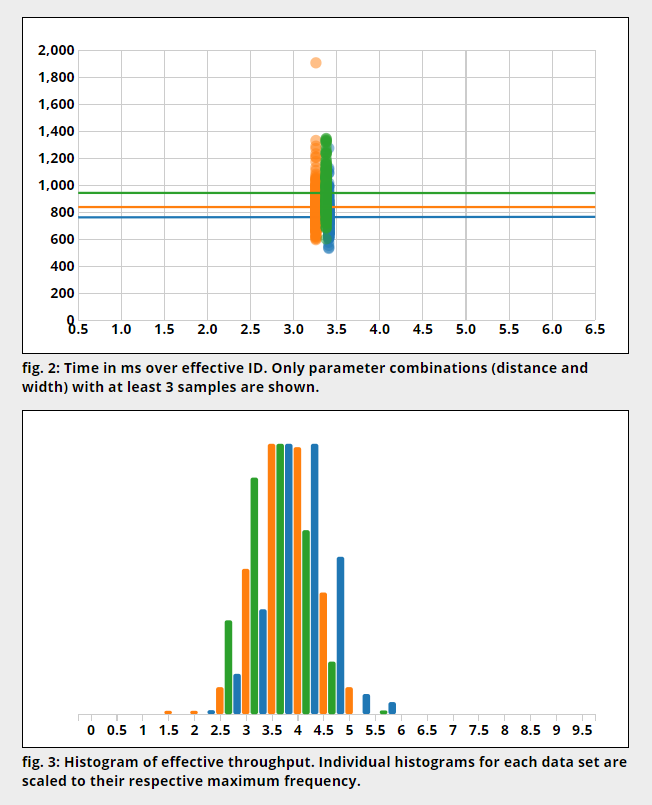

Authors: Mingrui Huang, Vincent Wang
Introduction: Our group picked a same mouse with different DPI and their effectiveness. (Conclusion at the End)
Blue: 400 DPI; Orange: 800 DPI; Green: 2000 DPI
As shown in the graph fig. 2 is the distribution and median of different DPIs.
In the graph fig. 3 is the detailed distribution of each DPI settings and their effectiveness.
We kept the width and distance of the red dots the same and tested the motion with different DPIs.

Model used

Results given by Mingrui

Results given by Vincent
Conclusion
We can see that the results from both fig 2 are a bit different and in general the ID for low DPI is higher than the other 2.
However, extremely high DPI may not be a good idea. From the fig 2s, the green(2000 DPI) do not perform a lower ID than orange (800 DPI).
For time consuming, higher DPI has pattern of taking a lot of time from Mingrui's test result. This might be it is too sensitive and went over the borders.
The highest DPI is more time consumed than the other two is because its high sensitivity and easy to go off from the intended destination.
However, for personal habits, it seems Mingrui is used to lower DPI settings (400 DPI), where Vincent is used to a bit higher settings (800 PI) according to their performence.
From fig 3s, that showed the detailed distribution of each click.
The 3 DPIs all gave (roughly) same results at ID 3.5-4 because they are the general pattern and the rest are based on the person's daily habits, so they varies.